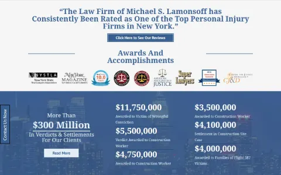
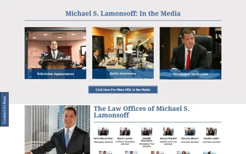
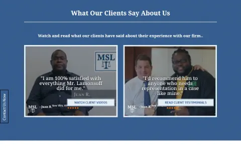
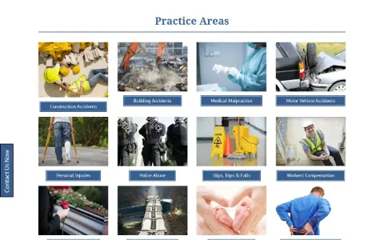

Case study · Web development · 2016–2017
The Law Offices of Michael S. Lamonsoff
A site redesign for a Manhattan personal-injury firm, built at Ardea Studios in late 2016 and launched in 2017. A homepage that argues the case in order, over a practice-area tree of 60+ landing pages.
- Role
- Designer and developer at Ardea Studios
- Timeline
- Built late 2016 · launched 2017
- Stack
- Archived at
- msllegal.com (Sep 2017)
The Brief
The Law Offices of Michael S. Lamonsoff is a personal-injury firm in lower Manhattan with a large practice-area footprint: construction accidents, premises liability, motor vehicle, medical malpractice, workplace injury, wrongful death, police abuse. The redesign had to do two things at once: persuade an injured person to call, and give each of those practice areas its own page for search.
What I Did
A homepage that argues in order
The homepage is structured like a closing argument. The team photo in front of the Brooklyn Bridge and the tagline. A pull quote about the firm's reputation. A row of award badges. A blue results band: more than $300 million in verdicts and settlements, with six of the largest listed. Media appearances on television, radio, and in print. The founder's profile and the attorney roster. Client video testimonials. Then the practice-area grid, and only after all of that, the long-form SEO copy.
The practice-area tree
Underneath the homepage, 60+ landing pages, one per practice area and sub-area, each targeted at its own search intent, plus accident help guides, a press archive, a results page, and a client reviews section. Built in Divi so the firm's staff could edit copy without a developer.
Screens
Captured from the Wayback Machine's September 2017 snapshot. The inner pages in the archive are missing their hero images, so these are the homepage sections; the URL bar on each frame opens the capture.





Notes
The site has been redesigned again since, as law-firm sites tend to be. What's shown here is the 2017 build as the archive captured it. A Spanish-language version appears in later captures with a different design, and isn't part of this work.